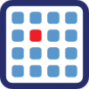

カテゴリ一覧から年度を選ぶと絞り込みができます。
Roy Parker博士、Eric Miska博士、望月 一史博士など、第一線で活躍するRNA研究者を招聘し開催された第25回 Tokyo RNA Clubを後援いたしました。
MBSJ2018 (第41回日本分子生物学会) にて、以下のシンポジウム・ワークショップを後援いたしました。
2回目となる日豪合同RNAミーティング「JAJ (Joint Australia-Japan/Japan-Australia Joint) RNA Meeting」を開催しました。
Chuan He博士、Samie Jaffrey博士、Joshua Mendell博士など、第一線で活躍するRNA研究者を招聘し開催された第24回 Tokyo RNA Clubを後援いたしました。
ConBio(2017年度生命科学系学会合同年次大会)にて、以下のシンポジウム、ワークショップを後援いたしました。
Joan Steitz博士、Julius Brennecke博士、Howard Chang博士らnoncoding RNA研究の第一人者が一堂に会し、活発な議論が行われました。
第四回領域会議を開催しました。後期の公募班員を交え、新しい解析手法の共有なども含めて活発な議論を行いました。
Bill Theurkauf博士、Eric Lai博士、Paul Anderson博士など、第一線で活躍するRNA研究者を招聘し開催された第22回 Tokyo RNA Clubを後援いたしました。